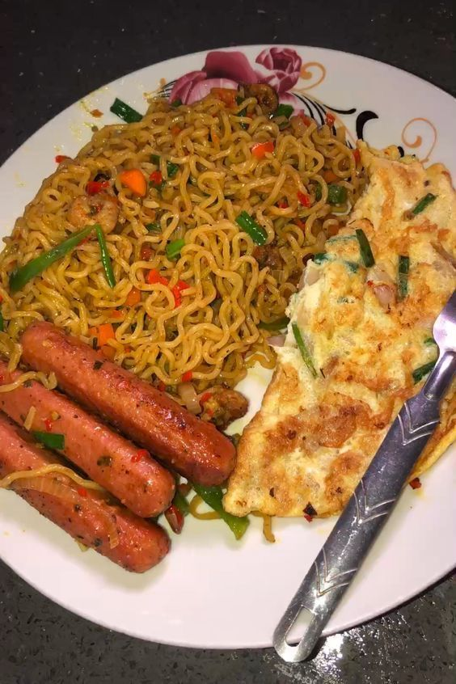

Special Beef Noodles is a delicious noodle meal prepared with well-seasoned beef, fresh vegetables and tasty spices. It is served with sausage and egg for an extra satisfying meal.
The noodles are freshly prepared and are suitable for breakfast, lunch, dinner or a quick meal. It is a tasty combination for customers who enjoy noodles with protein and vegetables.
| Specification | Details |
|---|---|
| Main Food | Noodles |
| Protein | Beef, Sausage and Egg |
| Extras | Fresh Vegetables |
| Preparation | Freshly Prepared |
Price: N5,500
Back to Home